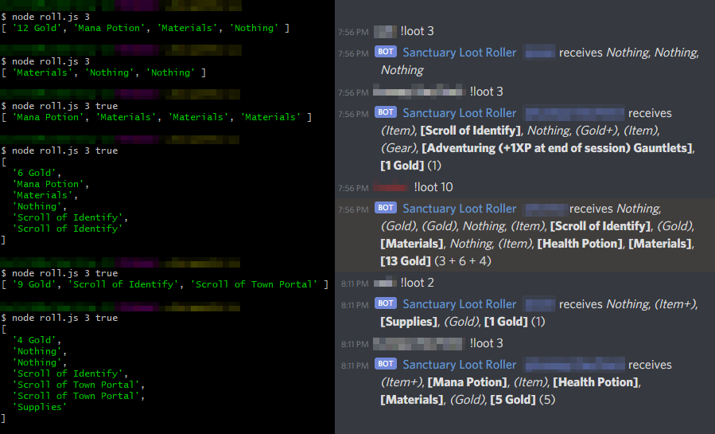
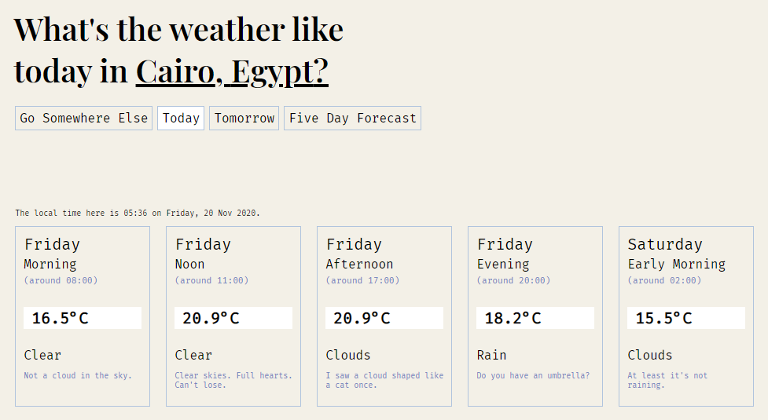
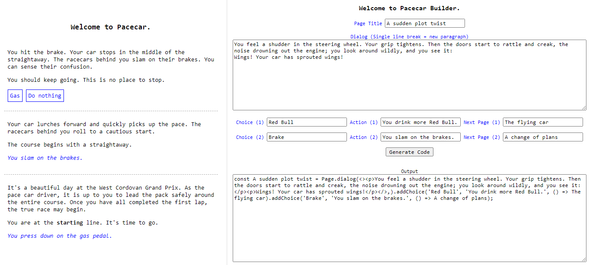
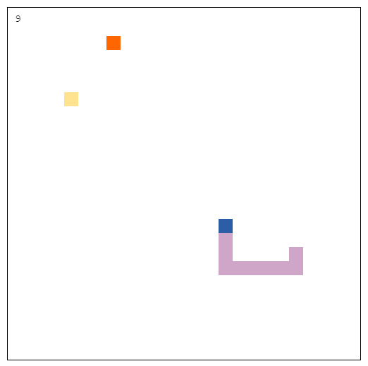
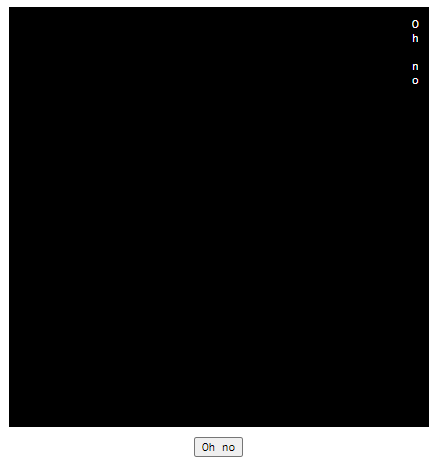

originally built by Felix for reading desktop logs, but then I learned typescript and added mobile log support.
mainly for those of us in support who, up until then, had to read mobile logs in a text editor-
but it ended up helping the mobile QA engineers, so that's neat. also it's an electron app.
built at first as a CLI app with node.js, then ported as a discord bot.
the loot logic in this campaign was pretty complicated. this bot saved us literal hours.

built in react as more of a virtual newspaper art project than a functional app.
if you want to get pretentious about it: it lets you travel the world in a uniquely immersive way.

both made with javascript. the builder takes the script for a page, and generates code that I can paste into the Pacecar app.
the game would have been neat if I finished it, but it turns out I was more interested in coding it than writing a narrative.
(you don't get to see the code because it's gross. sorry.)

written in HTML. has a power-up/debuff mechanic for extra funsies.

the first project that I wasn't told to make. made with HTML and CSS.
